library(AutoScore)
data("sample_data")
names(sample_data)[names(sample_data) == "Mortality_inpatient"] <- "label"
check_data(sample_data)
Your dataset doesn't have any missing values.Data type check passed.(sample size = 20000)**
library(AutoScore)
data("sample_data")
names(sample_data)[names(sample_data) == "Mortality_inpatient"] <- "label"
check_data(sample_data)
Your dataset doesn't have any missing values.Data type check passed.In Demo #1, we demonstrate the use of AutoScore on a comparably large dataset where separate training and validation sets are available. Please note that it is just a demo using simulated data, and thus, the result might not be clinically meaningful.
set.seed(4)
out_split <- split_data(data = sample_data, ratio = c(0.7, 0.1, 0.2))
train_set <- out_split$train_set
validation_set <- out_split$validation_set
test_set <- out_split$test_setmethod: “rf” (default) or “auc”.
method = rf: “rf” refers to random forest-based ranking
ntree: Number of trees required only if when method is “rf” (Default: 100).
ranking <- AutoScore_rank(train_set = train_set, method = "rf", ntree = 100)The ranking based on variable importance was shown below for each variable:
Age Lab_H Lab_K Lab_B Vital_E Vital_A Lab_I Lab_A
152.24380 151.60648 147.96133 134.85962 130.84508 128.05477 106.01727 96.68171
Vital_C Vital_B Lab_M Lab_J Vital_D Lab_D Vital_F Lab_E
94.91108 94.41436 92.31222 84.42058 83.63048 80.23488 77.07122 75.73559
Lab_C Lab_F Lab_L Lab_G Vital_G
75.48998 75.08788 72.61001 56.33592 56.08578 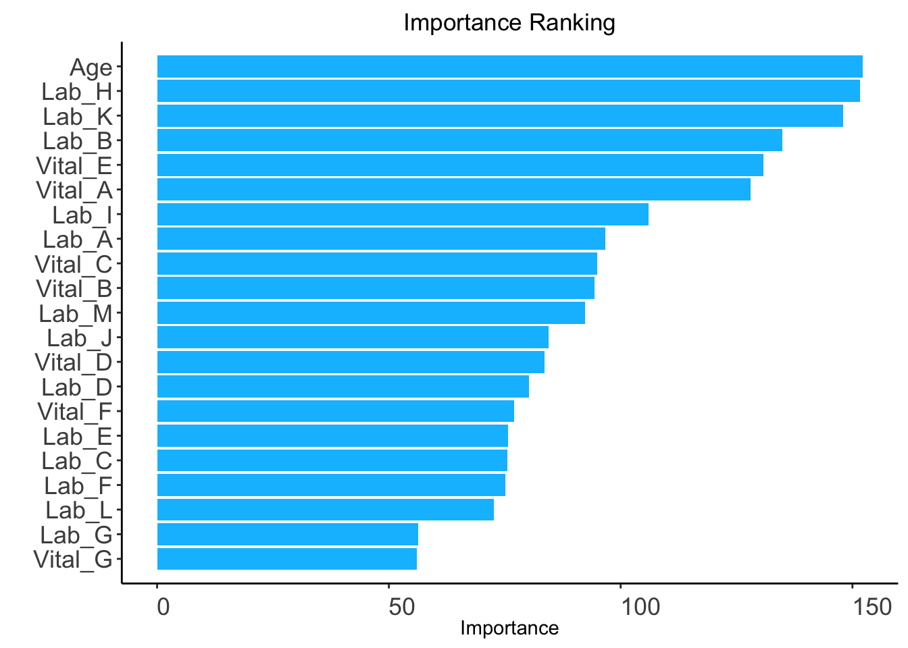
auc: “auc” refers to the AUC-based ranking. For “auc”, univariate models will be built based on the train set, and the variable ranking is constructed via the AUC performance of corresponding univariate models on the validation set (validation_set).validation_set: validation set required only if when method is “auc”.ranking <- AutoScore_rank(train_set = train_set, method = "auc", validation_set = validation_set)The auc-based ranking based on variable importance was shown below for each variable:
Lab_H Age Lab_B Lab_K Vital_E Vital_A Lab_M Lab_C
0.7016120 0.6926165 0.6796975 0.6741446 0.6708401 0.6319503 0.6010980 0.6010525
Lab_G Vital_C Vital_D Lab_F Lab_L Lab_A Vital_F Vital_G
0.5777848 0.5743282 0.5617414 0.5606434 0.5427415 0.5392167 0.5380191 0.5345188
Vital_B Lab_D Lab_I Lab_E Lab_J
0.5326130 0.5186835 0.5139225 0.4888609 0.4845179 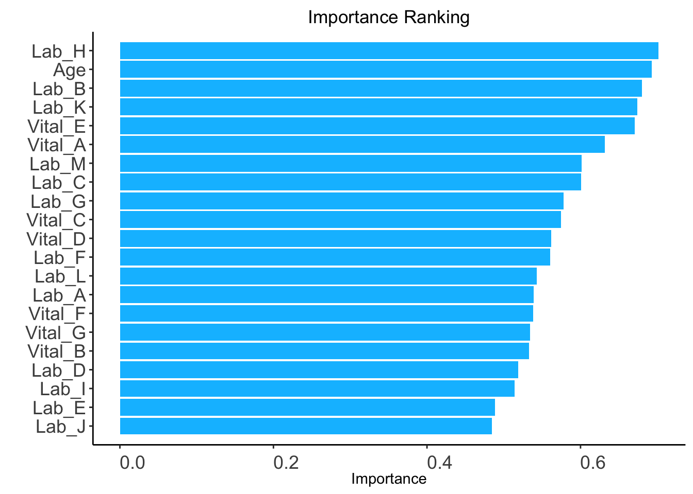
nmin: Minimum number of selected variables (Default: 1).nmax: Maximum number of selected variables (Default: 20).categorize: Methods for categorizing continuous variables. Options include "quantile" or "kmeans" (Default: "quantile").quantiles: Predefined quantiles to convert continuous variables to categorical ones. (Default: c(0, 0.05, 0.2, 0.8, 0.95, 1)) Available if categorize = "quantile".max_cluster: The max number of cluster (Default: 5). Available if categorize = "kmeans".max_score: Maximum total score (Default: 100).auc_lim_min: Min y_axis limit in the parsimony plot (Default: 0.5).auc_lim_max: Max y_axis limit in the parsimony plot (Default: “adaptive”).AUC <- AutoScore_parsimony(
train_set = train_set,
validation_set = validation_set,
rank = ranking,
max_score = 100,
n_min = 1,
n_max = 20,
categorize = "quantile",
quantiles = c(0, 0.05, 0.2, 0.8, 0.95, 1),
auc_lim_min = 0.5,
auc_lim_max = "adaptive"
)Select 1 Variable(s): Area under the curve: 0.6649
Select 2 Variable(s): Area under the curve: 0.7466
Select 3 Variable(s): Area under the curve: 0.7729
Select 4 Variable(s): Area under the curve: 0.7915
Select 5 Variable(s): Area under the curve: 0.8138
Select 6 Variable(s): Area under the curve: 0.8268
Select 7 Variable(s): Area under the curve: 0.822
Select 8 Variable(s): Area under the curve: 0.8196
Select 9 Variable(s): Area under the curve: 0.8188
Select 10 Variable(s): Area under the curve: 0.8184
Select 11 Variable(s): Area under the curve: 0.8178
Select 12 Variable(s): Area under the curve: 0.8238
Select 13 Variable(s): Area under the curve: 0.8224
Select 14 Variable(s): Area under the curve: 0.8256
Select 15 Variable(s): Area under the curve: 0.8301
Select 16 Variable(s): Area under the curve: 0.8278
Select 17 Variable(s): Area under the curve: 0.8269
Select 18 Variable(s): Area under the curve: 0.8273
Select 19 Variable(s): Area under the curve: 0.8244
Select 20 Variable(s): Area under the curve: 0.8259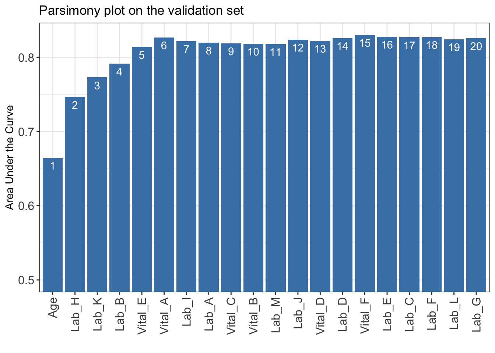
AUC for further analysis or export it as the CSV to other software for plotting.write.csv(data.frame(AUC), file = "D:/AUC.csv")num_var) based on the parsimony plot obtained in STEP(ii).num_var variables in the ranked list ranking obtained in STEP(i).final_variables based on the clinical preferences and knowledge.# Example 1: Top 6 variables are selected
num_var <- 6
final_variables <- names(ranking[1:num_var])
# Example 2: Top 9 variables are selected
num_var <- 9
final_variables <- names(ranking[1:num_var])
# Example 3: Top 6 variables, the 9th and 10th variable are selected
num_var <- 6
final_variables <- names(ranking[c(1:num_var, 9, 10)])cut_vec with current cutoffs of continuous variables, which can be fine-tuned in STEP(iv).cut_vec <- AutoScore_weighting(
train_set = train_set,
validation_set = validation_set,
final_variables = final_variables,
max_score = 100,
categorize = "quantile",
quantiles = c(0, 0.05, 0.2, 0.8, 0.95, 1)
)****Included Variables:
variable_name
1 Age
2 Lab_H
3 Lab_K
4 Lab_B
5 Vital_E
6 Vital_A
****Initial Scores:
======== ========== =====
variable interval point
======== ========== =====
Age <35 0
[35,49) 7
[49,76) 17
[76,89) 23
>=89 27
Lab_H <0.2 0
[0.2,1.1) 4
[1.1,3.1) 9
[3.1,4) 15
>=4 18
Lab_K <8 0
[8,42) 6
[42,58) 11
>=58 14
Lab_B <8.5 0
[8.5,11.2) 4
[11.2,17) 7
[17,19.8) 10
>=19.8 12
Vital_E <12 0
[12,15) 2
[15,22) 7
[22,25) 12
>=25 15
Vital_A <60 0
[60,73) 1
[73,98) 6
[98,111) 10
>=111 13
======== ========== =====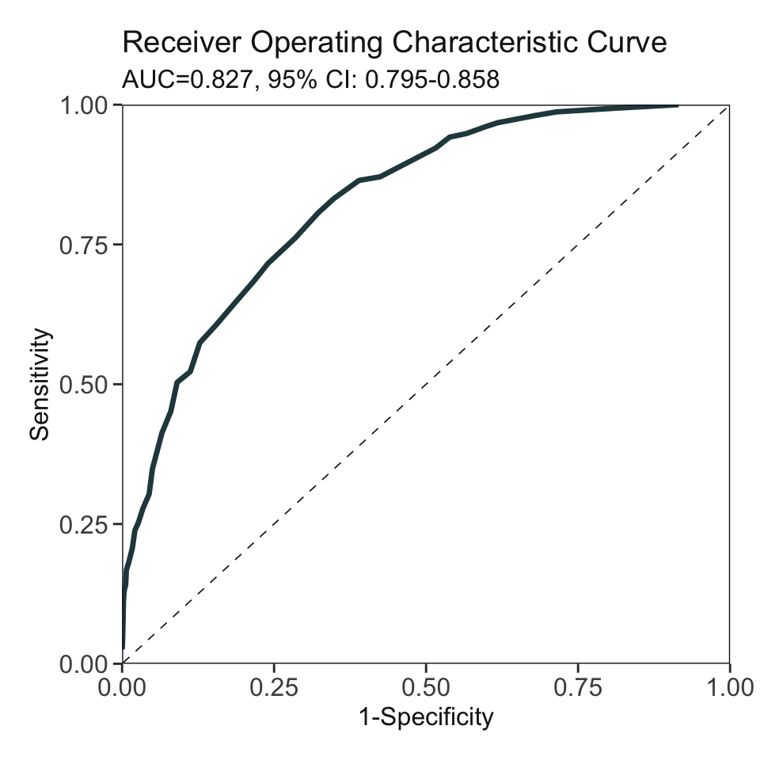
***Performance (based on validation set):
AUC: 0.8268 95% CI: 0.7953-0.8583 (DeLong)
Best score threshold: >= 57
Other performance indicators based on this score threshold:
Sensitivity: 0.8065
Specificity: 0.6775
PPV: 0.1736
NPV: 0.9766
***The cutoffs of each variable generated by the AutoScore are saved in cut_vec. You can decide whether to revise or fine-tune them cut_vec with domain knowledge to update the scoring table (AutoScore Module 5).## For example, we have current cutoffs of continuous variable: Age
## ============== =========== =====
## variable interval point
## ============== =========== =====
## Age <35 0
## [35,49) 7
## [49,76) 17
## [76,89) 23
## >=89 27 c(35, 49, 76, 89). We can fine tune the cutoffs as follows:# Example 1: rounding up to a nice number
cut_vec$Age <- c(35, 50, 75, 90)
# Example 2: changing cutoffs according to clinical knowledge or preference
cut_vec$Age <- c(25, 50, 75, 90)
# Example 3: combining categories
cut_vec$Age <- c(50, 75, 90)cut_vec$Lab_H <- c(0.2, 1, 3, 4)
cut_vec$Lab_K <- c(10, 40)
cut_vec$Lab_B <- c(10, 17)
cut_vec$hVital_A<- c(70, 98)
scoring_table <- AutoScore_fine_tuning(train_set,
validation_set,
final_variables,
cut_vec,
max_score = 100)***Fine-tuned Scores:
======== ======== =====
variable interval point
======== ======== =====
Age <50 0
[50,75) 11
[75,90) 19
>=90 24
Lab_H <0.2 0
[0.2,1) 6
[1,3) 11
[3,4) 17
>=4 21
Lab_K <10 0
[10,40) 8
>=40 14
Lab_B <10 0
[10,17) 3
>=17 8
Vital_E <12 0
[12,15) 1
[15,22) 8
[22,25) 15
>=25 18
Vital_A <60 0
[60,73) 1
[73,98) 7
[98,111) 11
>=111 15
======== ======== =====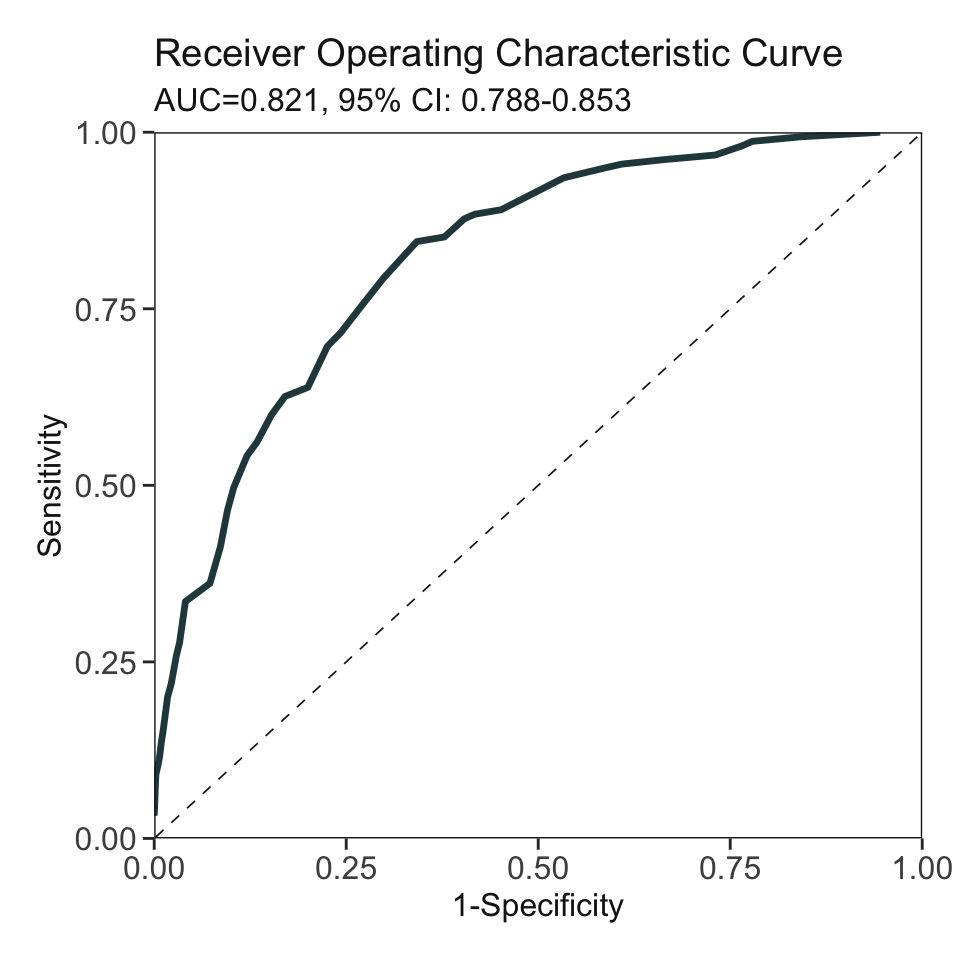
***Performance (based on validation set, after fine-tuning):
AUC: 0.8209 95% CI: 0.7884-0.8533 (DeLong)
Best score threshold: >= 54
Other performance indicators based on this score threshold:
Sensitivity: 0.8452
Specificity: 0.658
PPV: 0.1719
NPV: 0.9806threshold: Score threshold for the ROC analysis to generate sensitivity, specificity, etc. If set to "best", the optimal threshold will be calculated (Default: "best").with_label: Set to TRUE if there are labels in the test_set and performance will be evaluated accordingly (Default: TRUE).with_label to FALSE if there are not label in the test_set and the final predicted scores will be the output without performance evaluation.pred_score <-
AutoScore_testing(
test_set = test_set,
final_variables = final_variables,
cut_vec = cut_vec,
scoring_table = scoring_table,
threshold = "best",
with_label = TRUE
)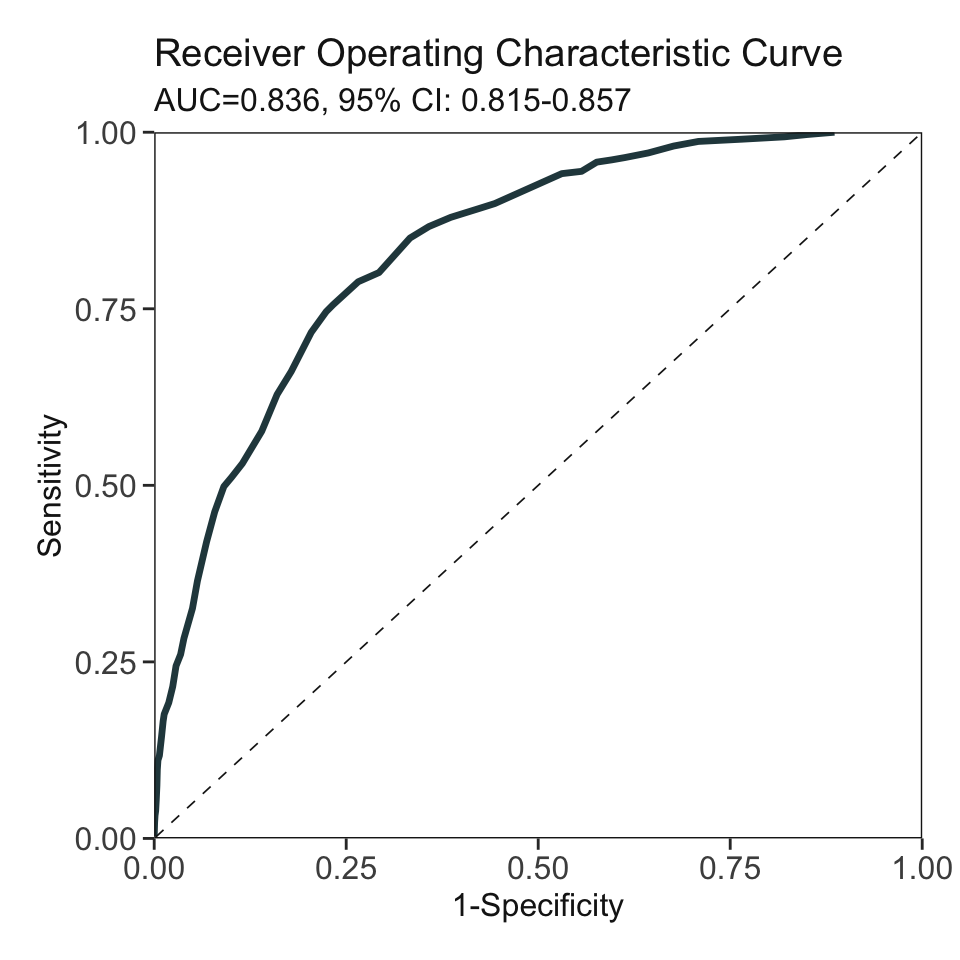
***Performance using AutoScore:
AUC: 0.836 95% CI: 0.8147-0.8573 (DeLong)
Best score threshold: >= 57
Other performance indicators based on this score threshold:
Sensitivity: 0.7557 95% CI: 0.7068-0.8046
Specificity: 0.7669 95% CI: 0.7536-0.7809
PPV: 0.2125 95% CI: 0.1976-0.2269
NPV: 0.9742 95% CI: 0.9691-0.9792head(pred_score) pred_score Label
1 19 FALSE
2 40 FALSE
3 69 TRUE
4 37 FALSE
5 48 FALSE
6 34 FALSEprint_roc_performance() to generate the performance under different score thresholds (e.g., 50).print_roc_performance(pred_score$Label, pred_score$pred_score, threshold = 50)AUC: 0.836 95% CI: 0.8147-0.8573 (DeLong)
Score threshold: >= 50
Other performance indicators based on this score threshold:
Sensitivity: 0.8925
Specificity: 0.5754
PPV: 0.1488
NPV: 0.9847Further analysis based on the final scoring systems (e.g., conversion table, model calibration, output the score) - Use conversion_table() to generate the performance under different risk (i.e., probability of mortality based on logistic regression estimation) cut-off (e.g., 0.01, 0.05, 0.1, 0.2, 0.5).
conversion_table(pred_score = pred_score, by ="risk", values = c(0.01,0.05,0.1,0.2,0.5))| Predicted Risk [>=] | Score cut-off [>=] | Percentage of patients (%) | Accuracy (95% CI) | Sensitivity (95% CI) | Specificity (95% CI) | PPV (95% CI) | NPV (95% CI) |
|---|---|---|---|---|---|---|---|
| 1% | 38 | 79 | 28.3% (27-29.6%) | 99% (97.7-100%) | 22.4% (21-23.8%) | 9.6% (9.4-9.8%) | 99.6% (99.2-100%) |
| 5% | 52 | 42 | 63.4% (61.9-64.8%) | 87.9% (84.4-91.5%) | 61.4% (59.8-62.9%) | 15.9% (15.1-16.7%) | 98.4% (97.9-98.9%) |
| 10% | 59 | 24 | 78.9% (77.7-80.2%) | 71.7% (66.8-76.2%) | 79.6% (78.3-80.8%) | 22.6% (21-24.2%) | 97.1% (96.6-97.6%) |
| 20% | 66 | 11 | 88.6% (87.7-89.4%) | 46.3% (40.4-52.1%) | 92.1% (91.3-93%) | 32.8% (29.1-36.3%) | 95.4% (94.9-95.9%) |
| 50% | 79 | 1 | 92.7% (92.4-93%) | 11.1% (7.5-14.7%) | 99.5% (99.3-99.7%) | 65.5% (52.6-77.3%) | 93.1% (92.8-93.3%) |
conversion_table() to generate the performance under different score thresholds (e.g., 20, 40, 60, 75).conversion_table(pred_score = pred_score, by = "score", values = c(20,40,60,75))| Score cut-off [>=] | Predicted Risk [>=] | Percentage of patients (%) | Accuracy (95% CI) | Sensitivity (95% CI) | Specificity (95% CI) | PPV (95% CI) | NPV (95% CI) |
|---|---|---|---|---|---|---|---|
| 20 | 0.1% | 99 | 8.4% (8.2-8.7%) | 100% (100-100%) | 0.8% (0.5-1.1%) | 7.7% (7.7-7.8%) | 100% (100-100%) |
| 40 | 1.4% | 73 | 34.5% (33-36%) | 98.7% (97.4-99.7%) | 29.1% (27.6-30.7%) | 10.4% (10.1-10.6%) | 99.6% (99.2-99.9%) |
| 60 | 11.4% | 22 | 80.9% (79.7-82.1%) | 66.1% (60.9-71.3%) | 82.1% (80.9-83.3%) | 23.6% (21.7-25.5%) | 96.7% (96.2-97.2%) |
| 75 | 40.7% | 2 | 92.5% (92.1-93%) | 16.6% (12.4-20.8%) | 98.8% (98.5-99.2%) | 54.4% (45.1-63.9%) | 93.4% (93.1-93.8%) |
plot_predicted_risk(pred_score = pred_score, max_score = 100,
final_variables = final_variables,
scoring_table = scoring_table, point_size = 1)pred_score_train based on training data for further analysis (e.g., conversion table based on the training data).pred_score_train <-
AutoScore_testing(
test_set = train_set,
final_variables = final_variables,
cut_vec = cut_vec,
scoring_table = scoring_table,
threshold = "best",
with_label = TRUE
)***Performance using AutoScore:
AUC: 0.8358 95% CI: 0.8245-0.8471 (DeLong)
Best score threshold: >= 58
Other performance indicators based on this score threshold:
Sensitivity: 0.7371 95% CI: 0.7113-0.762
Specificity: 0.7771 95% CI: 0.7698-0.7841
PPV: 0.2242 95% CI: 0.2161-0.2323
NPV: 0.9713 95% CI: 0.9685-0.974conversion_table()conversion_table(pred_score = pred_score_train, by ="risk", values = c(0.01,0.05,0.1,0.2,0.5))| Predicted Risk [>=] | Score cut-off [>=] | Percentage of patients (%) | Accuracy (95% CI) | Sensitivity (95% CI) | Specificity (95% CI) | PPV (95% CI) | NPV (95% CI) |
|---|---|---|---|---|---|---|---|
| 1% | 38 | 80 | 27.6% (26.9-28.2%) | 99.1% (98.5-99.6%) | 21.3% (20.6-22%) | 9.9% (9.8-10%) | 99.6% (99.4-99.9%) |
| 5% | 52 | 43 | 62.8% (62-63.6%) | 87.5% (85.4-89.3%) | 60.7% (59.8-61.5%) | 16.3% (15.9-16.7%) | 98.2% (97.9-98.5%) |
| 10% | 59 | 24 | 79.2% (78.5-79.9%) | 69.3% (66.4-71.8%) | 80.1% (79.4-80.8%) | 23.3% (22.4-24.3%) | 96.8% (96.5-97%) |
| 20% | 65 | 12 | 87.9% (87.4-88.4%) | 47.6% (44.8-50.4%) | 91.4% (90.9-91.9%) | 32.7% (30.9-34.6%) | 95.2% (95-95.5%) |
| 50% | 77 | 2 | 92.1% (91.9-92.3%) | 11.1% (9.2-13.1%) | 99.2% (99.1-99.4%) | 55% (48.5-61.5%) | 92.7% (92.6-92.9%) |
plot_predicted_risk(pred_score = pred_score_train, max_score = 100,
final_variables = final_variables,
scoring_table = scoring_table, point_size = 1)pred_score or pred_score_train for further analysis or export it as the CSV to other software (e.g., generating the calibration curve).write.csv(pred_score, file = "D:/pred_score.csv")
write.csv(pred_score_train, file = "D:/pred_score_train.csv")In Demo #2, we demonstrate the use of AutoScore on a comparably small dataset where there are no sufficient samples to form a separate training and validation datasets. Thus, the cross validation is employed to generate the parsimony plot.
data("sample_data_small")train_set is equal to validation_set and the ratio of validation_set should be 0. Then cross-validation will be implemented in the STEP(ii) AutoScore_parsimony().set.seed(4)
out_split <- split_data(data = sample_data_small, ratio = c(0.7, 0, 0.3), cross_validation = TRUE)
train_set <- out_split$train_set
validation_set <- out_split$validation_set
test_set <- out_split$test_setmethod: “rf” (default) or “auc”.method = auc: “auc” refers to the AUC-based ranking. For “auc”, univariate models will be built based on the train set, and the variable ranking is constructed via the AUC performance of corresponding univariate models on the validation set (validation_set).
- validation_set: validation set required only if when method is “auc”.
ranking <- AutoScore_rank(train_set, validation_set = validation_set, ntree = 100)The ranking based on variable importance was shown below for each variable:
Age Lab_B Lab_H Vital_E Lab_K Vital_A Lab_I Lab_J
37.406648 31.315285 25.564054 21.855069 20.907522 20.645694 16.788696 16.094679
Vital_B Lab_A Lab_M Vital_C Vital_F Lab_D Lab_C Lab_E
15.574365 14.651987 14.297510 13.765633 12.932043 12.679113 12.295000 12.165724
Lab_F Vital_D Lab_L Lab_G Vital_G
11.649415 11.431833 10.108408 9.297786 7.680821 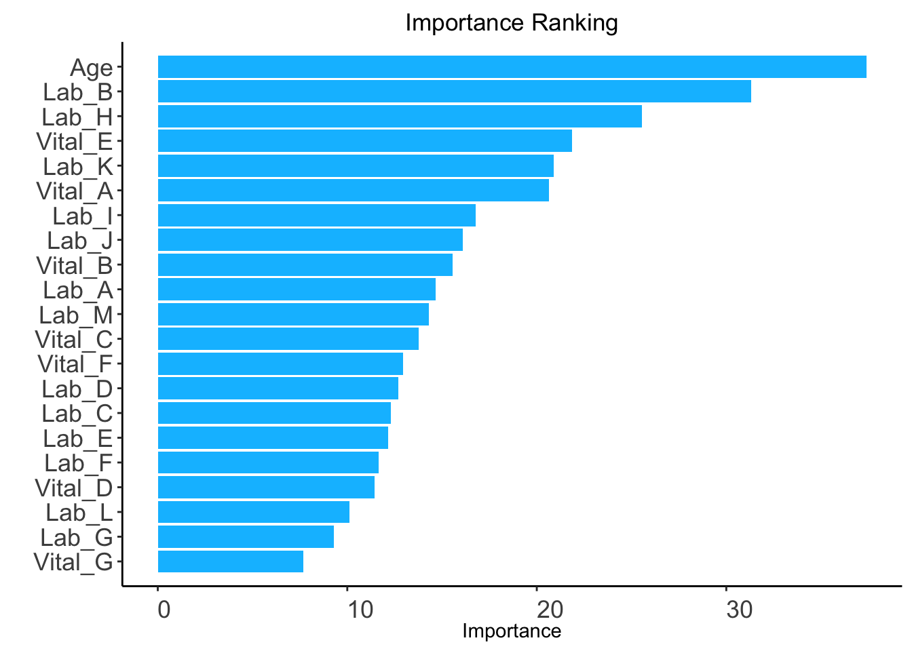
method = rf: “rf” refers to random forest-based ranking
- ntree: Number of trees required only if when method is “rf” (Default: 100).
ranking <- AutoScore_rank(train_set, ntree = 100)The ranking based on variable importance was shown below for each variable:
Age Lab_B Lab_H Lab_K Vital_E Vital_A Lab_I Lab_A
33.661071 30.937904 25.129836 23.696395 20.572556 19.405187 16.609492 15.938134
Lab_J Vital_C Vital_B Vital_F Lab_M Lab_C Lab_D Vital_D
14.991216 14.839592 14.576851 14.465937 14.461607 13.750307 13.282037 13.245753
Lab_F Lab_E Lab_L Lab_G Vital_G
12.097335 10.795598 10.617640 8.980531 6.903336 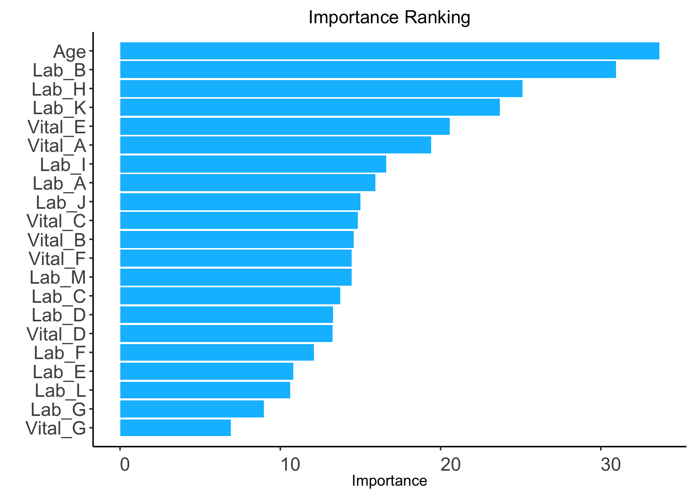
nmin: Minimum number of selected variables (Default: 1).nmax: Maximum number of selected variables (Default: 20).categorize: Methods for categorize continuous variables. Options include "quantile" or "kmeans" (Default: "quantile").quantiles: Predefined quantiles to convert continuous variables to categorical ones. (Default: c(0, 0.05, 0.2, 0.8, 0.95, 1)) Available if categorize = "quantile".max_cluster: The max number of cluster (Default: 5). Available if categorize = "kmeans".max_score Maximum total score (Default: 100).cross_validation : TRUE if cross-validation is needed, especially for small datasets.fold The number of folds used in cross validation (Default: 10). Available if cross_validation = TRUE.do_trace If set to TRUE, all results based on each fold of cross-validation would be printed out and plotted (Default: FALSE). Available if cross_validation = TRUE.AUC <- AutoScore_parsimony(
train_set,
validation_set,
rank = ranking,
max_score = 100,
n_min = 1,
n_max = 20,
cross_validation = TRUE,
categorize = "quantile",
fold = 10,
quantiles = c(0, 0.25, 0.5, 0.75, 1), #c(0, 0.05, 0.2, 0.8, 0.95, 1)
do_trace = FALSE
)***list of final mean AUC values through cross-validation are shown below
auc_set.sum
1 0.6396675
2 0.7231147
3 0.7315859
4 0.7457606
5 0.7624567
6 0.7669644
7 0.7703138
8 0.7642128
9 0.7665648
10 0.7713672
11 0.7674212
12 0.7664641
13 0.7584156
14 0.7558671
15 0.7629152
16 0.7636249
17 0.7689182
18 0.7656851
19 0.7625896
20 0.7593715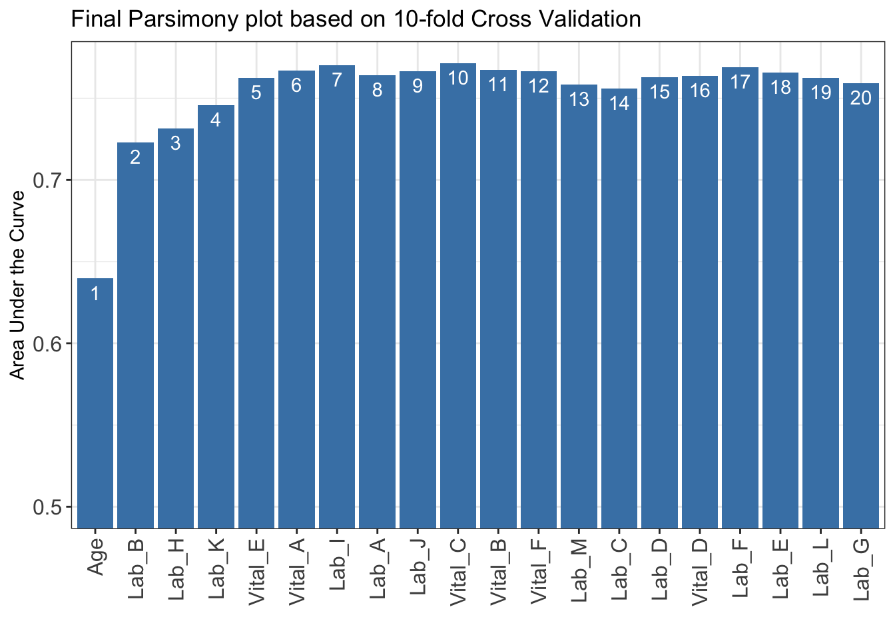
AUC for further analysis or export it as the CSV to other software for plotting.write.csv(data.frame(AUC), file = "D:/AUC.csv")num_var) based on the parsimony plot obtained in STEP(ii).num_var variables in the ranked list ranking obtained in STEP(i).final_variables based on the clinical preferences and knowledge).# Example 1: Top 6 variables are selected
num_var <- 6
final_variables <- names(ranking[1:num_var])
# Example 2: Top 9 variables are selected
num_var <- 9
final_variables <- names(ranking[1:num_var])
# Example 3: Top 6 variables, the 9th and 10th variable are selected
num_var <- 6
final_variables <- names(ranking[c(1:num_var, 9, 10)])cut_vec with current cutoffs of continuous variables, which can be fine-tuned in STEP(iv).cut_vec <- AutoScore_weighting(
train_set,
validation_set,
final_variables,
max_score = 100,
categorize = "quantile",
quantiles = c(0, 0.05, 0.2, 0.8, 0.95, 1)
)****Included Variables:
variable_name
1 Age
2 Lab_B
3 Lab_H
4 Lab_K
5 Vital_E
****Initial Scores:
======== =========== =====
variable interval point
======== =========== =====
Age <35 0
[35,49) 1
[49,75) 13
[75,88) 21
>=88 18
Lab_B <8.6 0
[8.6,11.3) 7
[11.3,17.5) 14
[17.5,19.8) 17
>=19.8 14
Lab_H <1 0
[1,3.1) 8
[3.1,4.1) 14
>=4.1 22
Lab_K <9 0
[9,43.2) 1
[43.2,59) 9
>=59 13
Vital_E <12 0
[12,15) 7
[15,22) 11
[22,25) 16
>=25 28
======== =========== =====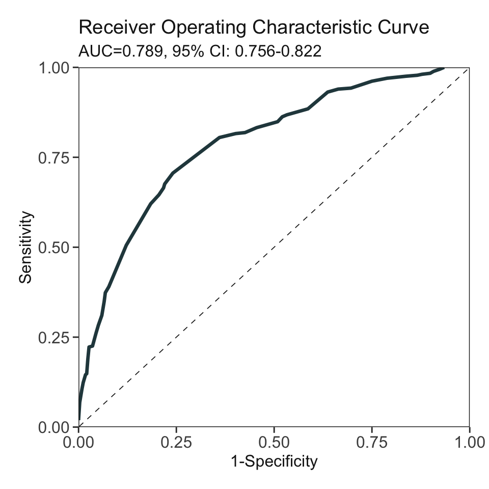
***Performance (based on validation set):
AUC: 0.7891 95% CI: 0.7558-0.8224 (DeLong)
Best score threshold: >= 48
Other performance indicators based on this score threshold:
Sensitivity: 0.706
Specificity: 0.7589
PPV: 0.7604
NPV: 0.7044
***The cutoffs of each variable generated by the AutoScore are saved in cut_vec. You can decide whether to revise or fine-tune them cut_vec with domain knowledge to update the scoring table (AutoScore Module 5).## For example, we have current cutoffs of continuous variable:
## ============== =========== =====
## variable interval point
## ============== =========== =====
#> Lab_K <9 0
#> [9,43.2) 1
#> [43.2,59) 9
#> >=59 13 c(9, 43.2, 59). We can fine tune the cutoffs as follows:# Example 1: rounding up to a nice number
cut_vec$Lab_K <- c(9, 45, 60)
# Example 2: changing cutoffs according to clinical knowledge or preference
cut_vec$Lab_K <- c(15, 45, 60)
# Example 3: combining categories
cut_vec$Lab_K <- c(45, 60)cut_vec$Lab_H <- c(1, 2, 3)
cut_vec$Age <- c(35, 50, 80)
cut_vec$Lab_B <- c(8, 12, 18)
cut_vec$Vital_E <- c(15, 22)
scoring_table <- AutoScore_fine_tuning(train_set,
validation_set,
final_variables,
cut_vec,
max_score = 100)***Fine-tuned Scores:
======== ======== =====
variable interval point
======== ======== =====
Age <35 0
[35,50) 2
[50,80) 18
>=80 23
Lab_B <8 0
[8,12) 8
[12,18) 15
>=18 22
Lab_H <1 0
[1,2) 12
[2,3) 13
>=3 18
Lab_K <45 0
[45,60) 10
>=60 17
Vital_E <15 0
[15,22) 10
>=22 20
======== ======== =====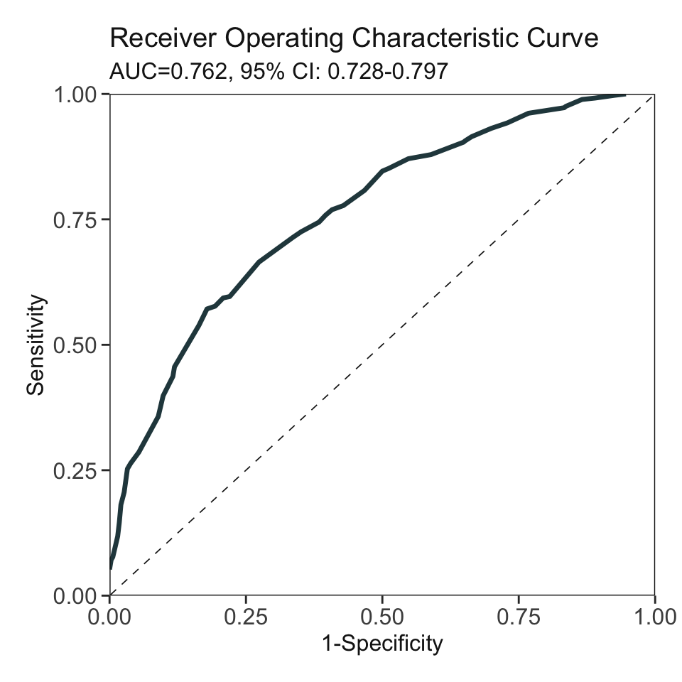
***Performance (based on validation set, after fine-tuning):
AUC: 0.7623 95% CI: 0.7275-0.7971 (DeLong)
Best score threshold: >= 60
Other performance indicators based on this score threshold:
Sensitivity: 0.5714
Specificity: 0.8214
PPV: 0.7761
NPV: 0.6389threshold: Score threshold for the ROC analysis to generate sensitivity, specificity, etc. If set to "best", the optimal threshold will be calculated (Default: "best").with_label: Set to TRUE if there are labels in the test_set and performance will be evaluated accordingly (Default: TRUE).with_label to FALSE if there are not label in the test_set and the final predicted scores will be the output without performance evaluation.pred_score <-
AutoScore_testing(
test_set,
final_variables,
cut_vec,
scoring_table,
threshold = "best",
with_label = TRUE
)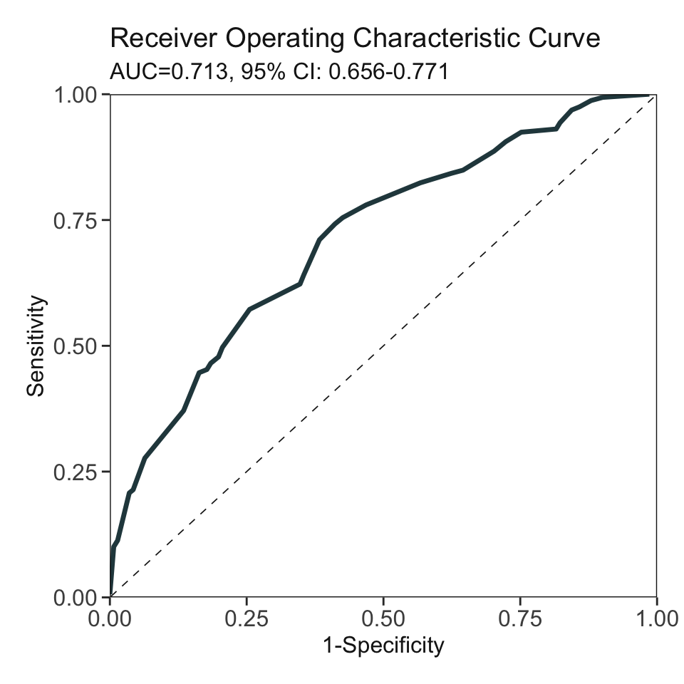
***Performance using AutoScore:
AUC: 0.7133 95% CI: 0.6556-0.7709 (DeLong)
Best score threshold: >= 51
Other performance indicators based on this score threshold:
Sensitivity: 0.7421 95% CI: 0.673-0.805
Specificity: 0.5887 95% CI: 0.5106-0.6667
PPV: 0.6707 95% CI: 0.621-0.7198
NPV: 0.6694 95% CI: 0.6043-0.7373head(pred_score) pred_score Label
1 53 TRUE
2 56 TRUE
3 49 TRUE
4 38 FALSE
5 51 TRUE
6 40 TRUEprint_roc_performance() to generate the performance under different score thresholds (e.g., 90).print_roc_performance(pred_score$Label, pred_score$pred_score, threshold = 90)AUC: 0.7133 95% CI: 0.6556-0.7709 (DeLong)
Score threshold: >= 90
Other performance indicators based on this score threshold:
Sensitivity: 0.0063
Specificity: 1
PPV: 1
NPV: 0.4716You can also generate conversion table using conversion_table(). Please refer to our. But we skipped it here.
Users could use the pred_score for further analysis or export it as the CSV to other software.
write.csv(pred_score, file = "D:/pred_score.csv")In Demo #3, we demonstrate the use of AutoScore on a dataset with missing values. AutoScore can automatically treat the missingness as a new category named Unknown. Please note that it is just a demo using simulated data, and thus, the result might not be clinically meaningful.
library(AutoScore)
data("sample_data")
names(sample_data)[names(sample_data) == "Mortality_inpatient"] <- "label"
check_data(sample_data)
Your dataset doesn't have any missing values.Data type check passed.sample_data <- AutoScore:::induce_informative_missing(sample_data, vars_to_induce = names(sample_data)[1:2], prop_missing = c(0.2, 0.6))The following steps are similar to Demo #1.
NOTE:
AUC <- AutoScore_parsimony(
train_set,
validation_set,
rank = ranking,
max_score = 100,
n_min = 1,
n_max = 20,
categorize = "quantile",
quantiles = c(0, 0.05, 0.2, 0.8, 0.95, 1),
auc_lim_min = 0.5,
auc_lim_max = "adaptive"
)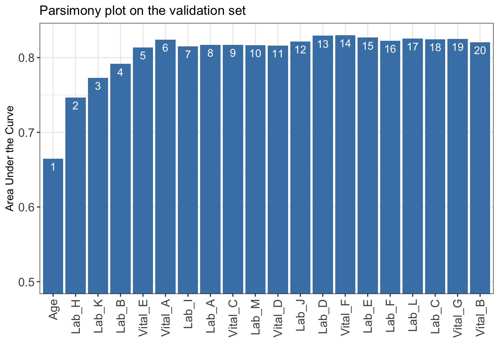
Unknown category indicating the missingness will be displayed in the final scoring table.***Fine-tuned Scores:
======== ========= =====
variable interval point
======== ========= =====
Age <50 0
[50,75) 11
[75,90) 19
>=90 23
Lab_H <0.2 0
[0.2,1) 6
[1,3) 10
[3,4) 18
>=4 22
Lab_K <10 0
[10,40) 7
>=40 14
Lab_B <10 0
[10,17) 3
>=17 8
Vital_E <12 0
[12,15) 1
[15,22) 8
[22,25) 15
>=25 18
Vital_A <59 2
[59,70) 0
[70,100) 8
[100,112) 14
>=113 16
Unknown 7
======== ========= =====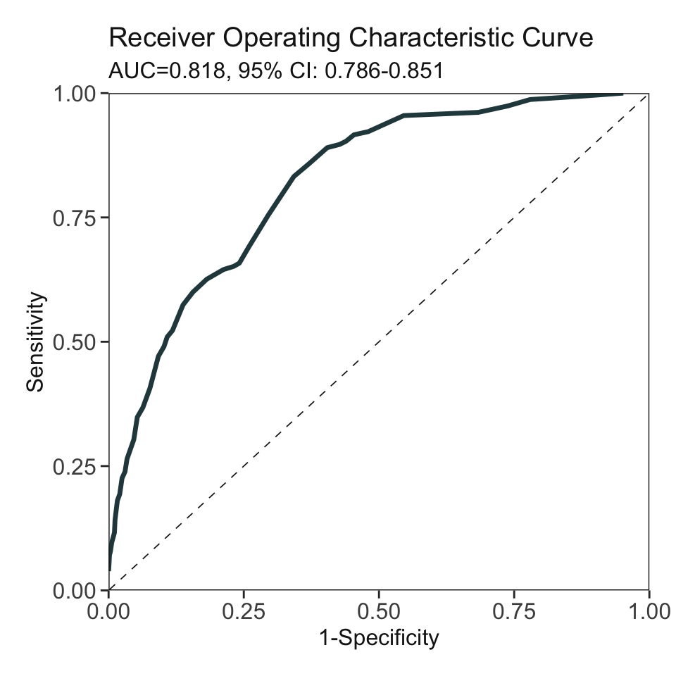
***Performance (based on validation set, after fine-tuning):
AUC: 0.8185 95% CI: 0.7863-0.8507 (DeLong)
Best score threshold: >= 54
Other performance indicators based on this score threshold:
Sensitivity: 0.8323
Specificity: 0.6575
PPV: 0.1695
NPV: 0.979